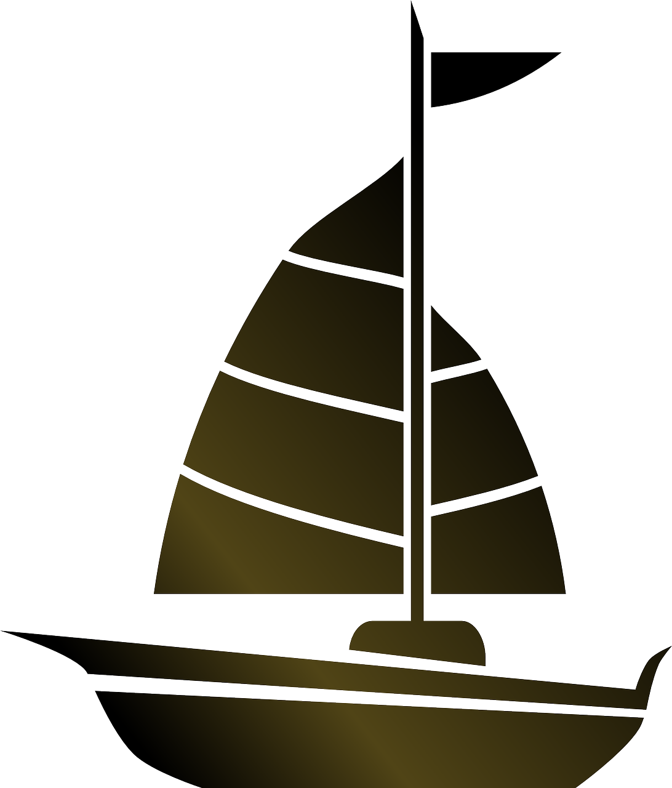
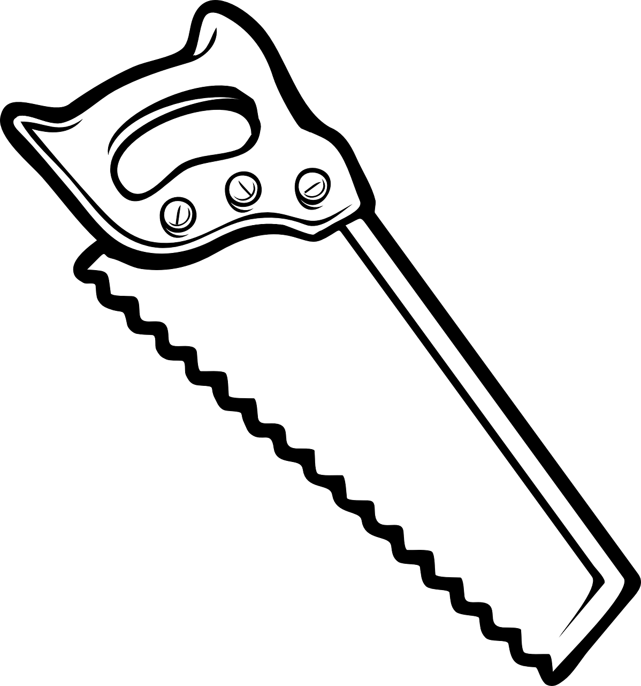

Sachverständiger für Sportboote
Segel- und Motorboote bis 24m
Dienstleistungen
Schadengutachten, Wertgutachten, Kurzgutachten

Kauf- und Verkaufsberatung, Investitionsberatung, Reparaturabnahmen

DIY Unterstützung
Ob bei einem Schaden, im Streitfall oder beim Kauf oder Verkauf eines Bootes – ein Sachverständiger als neutrale Partei kann Aufklärung, Absicherung und Unterstützung bieten.
Die Begutachtung eines Schadens am Boot, durch einen unabhängigen Sachverständigen, ermöglicht die Kostenübernahme einer fachgerechten Reparatur durch eine Versicherung.
Durch Fachexpertise gelingt eine umfassende Beurteilung des Bootszustandes und auch nicht sichtbarer Mängel, was sowohl zur Abwicklung von Reparaturen mit Versicherungen als auch beim Kauf von Gebrauchtbooten von Vorteil ist.
-SMD
Mail & Telefon
Kontaktieren Sie mich noch heute um ihr Anliegen zu realisieren